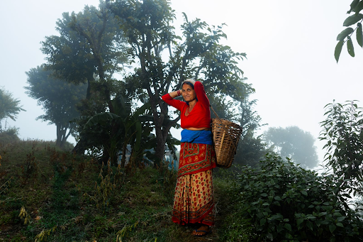

We focus on hope instead of guilt and portray the people we help with dignity. We want people to feel powerful, hopeful, and motivated to take action. Our imagery is about opportunity.
We want our brand to be inspirational. Our goal is that every interaction with charity: water feels exciting and filled with possibility.
Charity: Water uses 100% of public donations to fund clean water programs, helping them provide clear, traceable proof of impact. By doing this they are able to meet the purpose driven donors need for transparency and results, making sure our supporters know exactly where there money is going and how big of a change they are making.
You can be apart of the action today! We have many volunteering options by clicking the learn more link, as well as many other ways you can help.
Do not hesitate to reach out with any questions. Thank you for being interested in the cause.